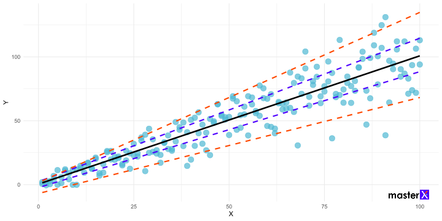
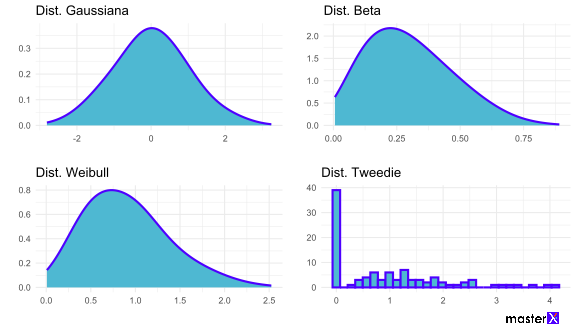

Capacitación y actualización del equipo de investigación en programas estadísticos
IIAP 2023
2/3/23
Modelos lineales
Modelo lineal
Un modelo lineal sigue la siguiente ecuación:
\[ \Large{y =\beta_0 + \sum_{i=1}^{n}(\beta_i*x_i) + \varepsilon} \]Abstracción de la realidad más simple posible.
Pocos eventos naturales son lineales.
La distribución asociada al modelo lineal es la distribución Gaussiana o Normal.
El cálculo de los coeficientes \(\beta_i\) se realiza mediante OLS o ML.
Teoría básica OLS: cálculo de coeficientes
La forma más sencilla de encontrar los coeficientes de una función lineal es utilizando el método de los mínimos cuadrados ordinarios (OLS). Para esta sección utilizaremos las formulas definidas a continuación:
- La fórmula de un modelo lineal se define como:
\[ \large{y_i = \beta_0 + \sum_{i=1}^n{(\beta_ix_i)}+\varepsilon_i} \]
- Para el cálculo del coeficiente de una variable \(X\) (\(\beta_i\)), se utilizan los valores de cada observación \(x\), el promedio del vector de la variable x \(\bar{x}\), los valores de cada observación \(y\), el promedio del vector de la variable \(X\) \(\bar{y}\), en la siguiente fórmula:
\[ \large{\hat\beta_i=\frac{\sum_i (x_i\bar{x})(y_i\bar{y})}{\sum_i (x_i\bar{x})^2}} \]
- Una vez calculados los coeficientes \(\beta_i\) se realiza el cálculo de \(\beta_0\):
\[ \large{\hat\beta_0=\bar{y} - \hat\beta_1\bar{x}} \]
- Un paso previo para el cálculo del p-valor asociado a un coeficiente del modelo lineal, es el estimar el error estándar del coeficiente. Esto es homólogo al cálculo de la desviación estándar del coeficiente, por lo que la raíz cuadrada de la fórmula de la varianza del coeficiente nos ayudará en el cálculo de \(\widehat{\text{se}}(\hat{b})\):
\[ \large{\widehat{\text{se}}(\hat{b_i}) = \sqrt{\widehat{\textrm{Var}}(\hat{b_i})} = \sqrt{\frac{n \hat{\sigma}^2}{n\sum x_i^2 - (\sum x_i)^2}}} \]
- Donde \(\hat{\sigma}^2\) es el error cuadrado medio, definido por la fórmula:
\[ \large{\hat{\sigma}^2 = \frac{1}{n-2} \sum_i \hat{\varepsilon}_i^2} \]
- De manera similar, se calcula el error estándar del intercepto \(\widehat{\text{se}}(\hat{b_0})\):
\[ \large{\widehat{\text{se}}(\hat{b_0}) = \sqrt{\widehat{\textrm{Var}}(\hat{b_0})} = \sqrt{\frac{\hat{\sigma}^2\bar{x}^2}{\sum_{i=1}^n(x_i-\bar{x})^2}}} \]
Asunciones teóricas del modelo lineal
- A1: Variable dependiente numérica continua.
- A2: Linealidad de la relación.
- A3: Normalidad de los residuales.
- A4: Independencia de los residuales.
- A5: Homocedasticidad de los residuales.
- A6: Ausencia de valores influyentes.
- A7: No multicolinearidad entre las variables independientes.
A2: Linealidad de la relación
Figura 2: Falta de linealidad en la relación entre X e Y. Es un monotónico pero no lineal.
A5: Homocedasticidad de los residuales
Figura 3: Relación entre X e Y es homocedástica. Línea negra cuantil 0.5; líneas punteadas azules cuantiles 0.25 y 0.75; líneas punteadas naranja cuantiles 0.05 y 0.95.
A5: Homocedasticidad de los residuales
Figura 4: Este gráfico presenta problemas de Heterocedasticidad. Línea negra cuantil 0.5; líneas punteadas azules cuantiles 0.25 y 0.75; líneas punteadas naranja cuantiles 0.05 y 0.95.
A5: Homocedasticidad de los residuales
Figura 5: Gráfico de Residuales vs Valores ajustados.
A7: Problema de multicolinearidad
Figura 6: Variance Inflation Factor (VIF) para identificar problemas de multicolinearidad.
Razones para escoger un modelo lineal
- Mi variable dependiente (respuesta, o Y) es numérica continua (mediciones).
- El fenómeno evaluado puede producir valores numéricos negativos.
- Los gráficos relacionando la variable dependiente con cada variable independiente numérica muestran linealidad (no monotonicidad).
Chequeo de distribución: Gráfico de Cullen y Frey

Figura 7: El punto azul oscuro son los datos observados. Los amarillos, los 1000 bootstrap realizados sobre los datos.
Comparación de distribuciones de probabilidades
Alternativas al modelo lineal
Existen alternativas para cuando se violan las asunciones teóricas del modelo lineal. Asegúrate de encontrar el modelo adecuado en lugar de forzar los datos a un modelo que no le corresponde:
- A1: Variable dependiente numérica continua \(\rightarrow\) (GLM).
- A2: Linealidad de la relación \(\rightarrow\) (Modelamiento no lineal Transformación).
- A3: Normalidad de los residuales \(\rightarrow\) (GLM).
- A4: Independencia de los residuales \(\rightarrow\) (Efectos mixtos).
- A5: Homocedasticidad de los residuales \(\rightarrow\) (WLS).
- A6: Ausencia de valores influyentes \(\rightarrow\) (Data cleaning).
- A7: No multicolinearidad entre las variables independientes \(\rightarrow\) (Modelos Log lineares).
Regresiones logarítmicas
Introducción a regresiones logarítmicas
Los modelos logarítmicos se utilizan en situaciones en las que existe un rápido decaimiento/aumento en la relación entre dos variables, implicando una evidente falta de linealidad en dicha relación. Pueden ser:
- Regresión Log-linear.
- Regresión Linear-log.
- Regresión Log-log.
Ecuación del modelo Linear clásico: \[ \normalsize{y =\beta_0 + \sum_{i=1}^{n}(\beta_i*x_i) + \varepsilon} \]
Ecuación del modelo Log-Linear: \[ \normalsize{\log(y) =\beta_0 + \sum_{i=1}^{n}(\beta_i*x_i) + \varepsilon} \]
Ecuación del modelo Linear-Log: \[ \normalsize{y =\beta_0 + \sum_{i=1}^{n}(\beta_i*\log(x_i)) + \varepsilon} \] Ecuación del modelo Log-Log: \[ \normalsize{\log(y) =\beta_0 + \sum_{i=1}^{n}(\beta_i*\log(x_i)) + \varepsilon} \]
Ecuación del modelo lineal clásico:
- Una unidad de aumento en \(X\) genera \(\beta\) unidades de cambio en \(Y\).
Ecuación del modelo Log-Linear:
- Una unidad de aumento en \(X\) (\(\Delta_X = 1\)) genera un cambio porcentual en \(Y\) (\(\Delta_Y\)) especificado como:\(\Delta_Y = 100*(e^{\beta*\Delta_X}-1)\)
Ecuación del modelo Linear-Log:
- Un 1% de aumento en \(X\) (\(\Delta_X = 1 + \text{aumento} = 1 + 0.01 = 1.01\)) genera un cambio de \(\beta*\Delta_X\) unidades de cambio en \(Y\) (\(\Delta_Y\)). Por consiguiente:\(\Delta_Y = \beta*\Delta_X\)
Ecuación del modelo Log-Log:
- Un 1% de aumento en \(X\) (\(\Delta_X = 1 + \text{aumento} = 1 + 0.01 = 1.01\)) genera un cambio porcentual en \(Y\) (\(\Delta_Y\)) especificado como:\(\Delta_Y = 100*(e^{\beta*\ln{\Delta_X}}-1)\)
¿Cuándo usar Log-Linear?
Se recomienda utilizar la regresión Log-Linear cuando la distribución de la variable de respuesta sigue una distribución de Poisson \(Y \sim \text{Poisson}(\lambda)\) o Exponencial Negativa \(Y \sim \text{Exp}(\lambda)\), y cuando la relación entre la variable de respuesta y las variables predictoras no es lineal.
¿Cuándo usar Linear-Log?
Se recomienda utilizar la regresión Linear-Log cuando la relación entre las variables dependiente \(Y\) e independiente \(X\) es exponencial, conociendo que la variable dependiente encaja con las asunciones del modelo lineal.
¿Cuándo usar Log-Log?
Se recomienda utilizar la regresión Log-Log cuando se espera que la relación entre las variables sea no lineal y logarítmica (alta correlación entre los logaritmos de ambas variables), y cuando se espera que los cambios porcentuales sean más importantes que los cambios absolutos.
Weighed Least Squares
(WLS)
Regresión Lineal Ponderada
- Todos los \(\varepsilon_i\) del modelo OLS tienen la misma función de probabilidad, y por tanto la misma varianza (homocedasticidad).
- Si no se cumple, nosotros le otorgamos a cada observación un peso para uniformizar la varianza.
- No afecta los \(\beta_i\), afecta los errores estándar.
Teoría básica: ¿dónde se modifican los pesos?
Permitiendo que \(\large{y_i = \beta_0 + \sum_{i=1}^n{(\beta_ix_i)}+\varepsilon_i}\)
Conociendo que la PDF Gaussiana con Máxima Verosimilitud es:
\[ \large{L=\prod_{i=1}^n \mathbb{P}(\varepsilon_i)\Bigg[-\frac{1}{2} \sum_{i=1}^n \frac{\varepsilon^2}{\sigma^2}\Bigg]} \] Siendo \(\large{X^2=\sum_{i=1}^n\frac{(O_i-C_i)^2}{\sigma^2}}\), entonces:
\(w_i=\frac{1}{\sigma^2}\) la función Chi-cuadrado se despeja: \(X^2=\sum_{i=1}^nw_i\varepsilon^2\), y sabiendo que \(\varepsilon_i=y_i-(\beta_0+\beta_ix_i)\), se aplican derivadas a la función gaussiana para obtener:
\[\large{b_0=\bar{y}_w-b_i\bar{x}_iw}\] Donde:\(\bar{y}\) y \(\bar{x}\) son los promedios ponderados.Definir pesos en nuestro modelo
Se utilizará el enfoque donde \(w_i=\frac{1}{\sigma^2}\) pero considerando como estimador de la varianza el valor ajustado \(\bar{y}\) por una regresión OLS previa de la siguiente manera:
# Creando modelo preliminar
mod_previo <- lm(y ~ x, data = datos)
# Extrayendo los datos necesarios
resid_abs <- abs(mod_previo$residuals)
y_hat <- mod_previo$fitted.values
# Obteniendo los pesos
mod_w <-lm(resid_abs ~ y_hat)
w <- 1 / mod_w$fitted.values^2
# Generando regresión WLS
mod_wls <- lm(y ~ x, data = datos, weights = w)Regresiones Lasso & Ridge
Problema de Multicolinearidad
# Funciones para modificar los gráficos de ggpairs
lowerFn <- function(data, mapping, method = "lm", ...) {
p <- ggplot(data = data, mapping = mapping) +
geom_point(size=4, alpha=0.7, color="#4eb8d2")+
geom_smooth(method = method, color = "black", ...)
p
}
diagFn <- function(data, mapping, ...) {
p <- ggplot(data = data, mapping = mapping) +
geom_density(fill="#4e00ff", color="#4e00ff")
p
}Problema de Multicolinearidad
Problema de Multicolinearidad
Alternativas para resolver
problemas de multicolinearidad
Si la multicolinearidad es dependiente de tu diseño de muestreo/experimental, considera ampliar la muestra o mejorar el diseño.
Si la multicolinearidad se debe a la relación entre variables únicamente, puedes aplicar métodos de selección de variables: Step-wise regression.
Si no es óptimo reducir la cantidad de variables en el modelo, usa Ridge regression para aplicar penalidades sobre cada variable y reducir su colinearidad.
Si puedes reducir la cantidad de variables y deseas que la penalidad sea la encargada de eliminar (anular) las variables colineares en el modelo, utiliza Lasso regression.
Regresión Lasso (regularización L1) y
Regresión Ridge (regularización L2)
Las regresiones con regularización penalizan a cada variable independiente para reducir su efecto en el modelo.
La regresión Lasso (L1) puede penalizar a los coeficientes hasta convertirlos en 0. Esto implica que también reduce el número de variables independientes utilizadas en el modelo.
La regresión Ridge (L2) penaliza a los coeficientes con tendencia a ser 0, pero nunca lo alcanza. No reduce variables independientes.
Los coeficientes de ambas regresiones siempre son menores que el modelo OLS.
El valor \(\lambda\) (lambda) reduce el efecto de las variables independientes sobre la variable dependiente. Por lo tanto, un alto valor de \(\lambda\) crea regresiones con menor pendiente.
Figura 13: Comparativa entre las regresiones OLS (línea negra), Ridge y Lasso. Notar que las regresiones Lasso se superponen totalmente.
Regresión Ridge (regularización L2)
Coeficientes OLS (modelo lineal clásico):
(Intercept) V1 V2 V3 V4 V5
0.137 0.065 -0.004 -0.147 0.138 0.070
V6 V7 V8 V9 V10
-0.037 0.093 0.110 -0.049 0.137 Considerando una matriz de variables independientes llamada x, y una variable dependiente y, los coeficientes de penalizado con el método L2 (Regresión ridge):
Regresión Lasso (regularización L1)
Coeficientes OLS (modelo lineal clásico):
(Intercept) V1 V2 V3 V4 V5
0.137 0.065 -0.004 -0.147 0.138 0.070
V6 V7 V8 V9 V10
-0.037 0.093 0.110 -0.049 0.137 Considerando una matriz de variables independientes llamada x, y una variable dependiente y, los coeficientes de penalizado con el método L1 (Regresión ridge):
Modelos Generalizados Lineales (GLM)
Reconocimiento de la familia de distribución
Un concepto clave para comprender los modelos GLM es identificar la familia de distribución de probabilidades a la que nuestros datos de la variable dependiente \(Y\) son más afines.
¿Cuándo \(Y\) no es Gaussiana?
Cuando la variable respuesta es una proporción de un total de conteos: [0,1]
Cuando la respuesta es binaria (0 o 1): éxito o fracaso.
Cuando la respuesta es un conteo. Son discretos y no negativos.
Cuando la respuesta es continua y positiva (datos con asimetría).
Distribuciones de probabilidades en GLM 1
Normal (Gaussiana): es la distribución de probabilidad más comúnmente utilizada en modelos de regresión lineal clásicos. Se utiliza cuando se espera que la variable de respuesta tenga una distribución normal.
Gamma: se utiliza para variables de respuesta continuas y positivas que no siguen una distribución normal, como los tiempos de espera o las tasas de eventos.
Inversa Gamma: se utiliza para variables de respuesta continuas que siguen una distribución normal con varianza heterogénea.
Inversa Gaussiana: se utiliza para variables de respuesta continuas que siguen una distribución normal con varianza heterogénea.
Lognormal: se utiliza para variables de respuesta continuas y positivas que no siguen una distribución normal, pero que tienen una distribución lognormal.
Exponencial: se utiliza para variables de respuesta continuas y positivas que siguen una distribución exponencial, como los tiempos de falla o los tiempos de espera entre eventos.
Distribuciones de probabilidades en GLM 1
Figura 14: Principales distribuciones de probabilidades continuas, incluyendo la distribución normal y distribuciones sesgadas.
Distribuciones de probabilidades en GLM 2
Beta: se utiliza para variables de respuesta continuas que están acotadas entre 0 y 1, como la proporción de personas que aprueban un examen.
Weibull: se utiliza para variables de respuesta continuas y positivas que siguen una distribución de Weibull, como los tiempos de falla o los tiempos de espera entre eventos.
Tweedie: es una distribución general que incluye muchas de las distribuciones mencionadas anteriormente como casos especiales. Se utiliza cuando la variable de respuesta puede ser positiva, continua o discreta, y cuando se espera que tenga una varianza que depende de la media.
Distribuciones de probabilidades en GLM 2
Figura 15: Distribuciones de probabilidades continuas menos frecuentes, incluyendo la distribución normal para la comparación.
Distribuciones de probabilidades en GLM 3
Bernoulli (Binomial): se utiliza para variables de respuesta binarias (éxito/fallo, sí/no) o para variables que se pueden clasificar en dos categorías.
Poisson: se utiliza para variables de respuesta con conteos discretos, como el número de eventos en un intervalo de tiempo o en una área.
Binomial Negativa: se utiliza para variables de respuesta con conteos discretos que tienen una varianza mayor que su media, como el número de bacterias en una muestra.
Geométrica: se utiliza para variables de respuesta con conteos discretos que representan el número de ensayos hasta el primer éxito.
Logística (Binomial): se utiliza para variables de respuesta binarias o categóricas que se pueden modelar como una función de la probabilidad de éxito.
Distribuciones de probabilidades en GLM 3
Figura 16: Distribuciones de probabilidades discretas.
Teoría de los GLM: aspectos matemáticos
La distribución de probabilidades de la variable \(Y\) debe estar dentro de la familia exponencial.
El componente sistemático sigue siendo lineal \(\eta = \beta_0+\sum_{i=1}^n{(\beta_i*x_i)} + \varepsilon\).
La variable dependiente \(Y\) (\(\mu_i\)) se ajusta a linealidad de \(\eta\) a través de una función de enlace \(g(Y)\)
Por lo tanto, la función de enlace: \[ g(\mu) = \eta \]
Y la función de varianza (con parámetro de dispersión): \[ Var(Y) = \phi \mu \]
Teoría de los GLM: función de enlace
| Enlace | Función | Inversa |
|---|---|---|
| Identidad | \(\mu\) | \(\mu\) |
| Logit | \(\ln\left(\frac{\mu}{1-\mu}\right)\) | \(\frac{1}{1+e^{-\eta}}\) |
| Probit | \(\Phi^{-1}(\mu)\) | \(\Phi(\eta)\) |
| Complemento Log-Log | \(\ln(-\ln(1-\mu))\) | \(1-e^{-e^\eta}\) |
| Raíz cuadrada | \(\sqrt{\mu}\) | \(\mu^2\) |
| Logaritmo | \(\ln(\mu)\) | \(e^\eta\) |
| Raíz cuadrada inversa | \(\frac{1}{\sqrt{\mu}}\) | \(\frac{1}{\mu^2}\) |
| Complemento Log-Log (modificado) | \(\ln(-\ln\mu)\) | \(1-e^{-e^{-\eta}}\) |
Regresión GLM para var. Binarias: introducción
Función de enlace: logit
Los modelos logísticos son un tipo de modelo estadístico utilizado para modelar la relación entre una variable binaria (0 o 1) y una o más variables predictoras.
Binomial y Bernoulli.
El modelo de regresión logística se define como:
\[ \ln \left( \frac{p}{1-p} \right) = \beta_0 + \beta_1 x_1 + \cdots + \beta_p x_p \]
Donde:
\(p\) es la probabilidad de éxito (1) \(x_1, \dots, x_p\) son las variables predictoras \(\beta_0, \dots, \beta_p\) son los coeficientes de regresión El modelo se ajusta mediante el método de máxima verosimilitud y los coeficientes se interpretan como log odds ratios.
Regresión GLM para var. Binarias: interpretación
- Considerando \(\eta = \beta_0 + \beta_1 x_1 + \cdots + \beta_n x_n\), la probabilidad de éxito se puede obtener como:
\[ p = \frac{e^{\eta}}{1+e^{\eta}} \]
El coeficiente \(\beta_j\) representa el cambio en el log odds ratio por cada unidad de cambio en \(x_i\).
El coeficiente \(e^{\beta_j}\) representa el cambio expresado en odds ratio por cada unidad de cambio en \(x_i\).
Regresión GLM para var. Binarias: concepto de odds
- Probabilidad: es la medida de incertidumbre de que un evento suceda. Toma valores entre 0 y 1. Por ejemplo: Probabilidad de que llueva en un día nublado: 80%
\[p = 0.8\]
- Posibilidad (odds): es la razón de dos probabilidades. Se interpreta como la relación entre la probabilidad de que ocurra un evento \(p\) y la probabilidad de que no ocurra \(q = 1 - p\). Considera que siempre \(p + q = 1\). Toma valores entre 0 e \(+\infty\). Por ejemplo: La probabilidad de que llueva en un día nublado es 4 veces la probabilidad de que no llueva, o en su defecto La probabilidad de que llueva en un día nublado es 3 veces más la probabilidad de que no llueva:
\[Odds = \frac{p}{q} = \frac{p}{1-p} = \frac{0.8}{0.2}\]
Regresión GLM para var. Binarias:
concepto de odds ratio
- Ratio de Posibilidades (odds ratio): es la razón de las posibilidades (odds) de que ocurra un evento en un grupo en comparación con un grupo de referencia (nivel base). Toma valores entre \(-\infty\) e \(+\infty\), siendo 1 el valor central de no efecto. Por ejemplo: La probabilidad de que llueva en un día nublado es 36 veces la probabilidad de que llueva en un día soleado, o en su defecto La probabilidad de que llueva en un día nublado es 35 veces más la probabilidad de que llueva en un día soleado:
\[OR = \frac{odds_1}{odds_2} = \frac{\frac{p_1}{1 - p_1}}{\frac{p_2}{1 - p_2}} = \frac{\frac{0.8}{0.2}}{\frac{0.1}{0.9}} = \frac{4}{0.111} = 36\]
Regresión GLM para var. Binarias:
interpretación Odds y Odds ratio
Odds
Si \(\beta_i = 0\) entonces \(e^{\beta_1}=1\), implicando efecto nulo. Es decir, \(X\) e \(Y\) no están asociadas.
Si \(\beta_i > 0\) entonces \(e^{\beta_1}>1\), implicando incremento esperado en las probabilidades.
Si \(\beta_i < 0\) entonces \(e^{\beta_1}<1\), implicando disminución esperada en las probabilidades.
Odds ratio
Si \(\beta_i = 0\) entonces \(e^{\beta_1}=1\), no hay diferencias entre el efecto del nivel de estudio vs el nivel base. Causan el mismo efecto sobre \(Y\).
Si \(\beta_i > 0\) entonces \(e^{\beta_1}>1\), implicando incremento esperado en las probabilidades cuando la observación pertenece al nivel de estudio respecto al nivel base.
Si \(\beta_i < 0\) entonces \(e^{\beta_1}<1\), implicando disminución esperada en las probabilidades cuando la observación pertenece al nivel de estudio respecto al nivel base.
Regresión GLM para var. de Conteos: Poisson
Función de enlace: logaritmo natural
La variable que sigue esta distribución proviene de un proceso de conteos.
La distribución de Poisson es discreta, toma valores enteros no negativos.
Es número de ocurrencias de un evento en un intervalo de tiempo o espacio dado.
Los eventos ocurren de manera independiente y a una tasa constante promedio lambda (\(\lambda\)).
Asume que la media y la varianza son iguales, lo que se conoce como equidispersión.
Regresión GLM para var. de Conteos:
efecto multiplicativo
El modelo de poisson es para una sola variable \(X\) sería: \(\log(\mu)=\beta_0+\beta_ix_i+\varepsilon\)
Para despejar \(\mu\) se exponencian ambos componentes (\(\varepsilon\) no se considera en el cálculo):
\[ \begin{align} \mu&=e^{\beta_0+\beta_ix_i}\\ \mu&=e^{\beta_0}*e^{\beta_ix_i} \end{align} \]
- Considera \(\beta_0 = -0.339\) y \(\beta_i = 0.256\)
\[ \begin{align} \log(\mu)&=-0.339+0.256x_i\\ \mu&=e^{-0.339+0.256x_i}\\ \mu&=e^{-0.339}*e^{0.256x_i} \end{align} \]
Regresión GLM para var. de Conteos:
efecto multiplicativo
Por lo tanto, una unidad de aumento en \(x_i\) genera un aumento en conteo por un factor de \(e^{0.256*1}=1.292\) unidades, con una confianza del 95%.
En otras palabras, la tasa de aumento de \(\mu\) es de \(1.292 - 1 = 0.292 = 29.2%\) por cada unidad de aumento de \(x_i\).
Regresión GLM para var. de Conteos: interpretación
Si \(\beta_i = 0\) entonces \(e^{\beta_1}=1\), implicando efecto nulo. Es decir, \(X\) e \(Y\) no están asociadas.
Si \(\beta_i > 0\) entonces \(e^{\beta_1}>1\), implicando incremento esperado en el conteo de \(Y\) por cada unidad de \(X\).
Si \(\beta_i < 0\) entonces \(e^{\beta_1}<1\), implicando disminución esperada en el conteo de \(Y\) por cada unidad de \(X\).
Regresión GLM para var. de Conteos: datos de ratio
Cuando la exposición cambia de observación a observación: \(c = \text{conteo}\) y \(t = \text{tiempo de muestreo}\).
La variable \(Y\) realmente es una tasa de ocurrencia, \(Y/t\), por tanto:
\[ E(Y/t)=\frac{1}{t}*E(Y)=\frac{E(Y)}{t}=\frac{\mu}{t} \]
- Gracias al vínculo de enlace logarítmico, \(t\) ingresa al modelo como offset:
\[ \begin{align} \log(E(Y/t)) = \log(\mu/t) &= \beta_0+\beta_ix_i \\ \log(\mu) - \log(t)&= \beta_0+\beta_ix_i \\ \log(\mu) &= \beta_0+\beta_ix_i + \log(t)\\ \mu &= e^{\beta_0}+e^{\beta_ix_i} + e^{\log(t)}\\ \mu &= e^{\beta_0}+e^{\beta_ix_i} + t\\ \end{align} \]
Regresión GLM para var. de Conteos: sobredispersión
El parámetro de dispersión \(\phi\) se asume como \(\phi=1\) en un modelo de Poisson. Esto debido a que \(\mu = Var\), por tanto \(mu/Var = 1\) (equidispersión).
Si la dispersión es mayor que 1, el modelo de Poisson puede subestimar la varianza y, por lo tanto, sobreestimar la significancia de las variables explicativas.
Solución: utilizar un modelo binomial negativo.
Regresión GLM para var. de Continuas: distribuciones
- Si la variable es de respuesta es numérica continua, puedes revisar la función de densidad de la misma para compararla con las principales distribuciones, como lo vimos anteriormente:
Regresión GLM para var. de Continuas: modelamiento
Una alternativa más certera es el utilizar el criterio de información de Akaike (AIC) para comparar el ajuste de los modelos. A menos AIC, mejor el ajusto del modelo hacia los datos. (Usa ?stats::family):
# Ajustar modelo GLM gaussiano
model_gaussian <- glm(y ~ x, family = gaussian())
# Ajustar modelo GLM lognormal
model_lognorm <- glm(y ~ x, family = gaussian(link = "log"))
# Ajustar modelo GLM gamma
model_gamma <- glm(y ~ x, family = Gamma())
# Ajustar modelo GLM gamma-inverso
model_gamma_inv <- glm(y ~ x, family = inverse.gaussian())Regresión GLM para var. de Continuas: modelamiento
Una alternativa más certera es el utilizar el criterio de información de Akaike (AIC) para comparar el ajuste de los modelos. A menos AIC, mejor el ajusto del modelo hacia los datos. (Usa ?stats::family):
# Ajustar modelo GLM gaussiano-inverso
model_gaussian_inv <- glm(y ~ x, family = gaussian(link = "inverse"))
# Ajustar modelo GLM exponencial
model_exponential <- glm(y ~ x, family = Gamma(link = "log"))
# Comparar ajuste de modelos con AIC
MuMIn::model.sel(model_gaussian, model_lognorm,
model_gamma, model_gamma_inv,
model_gaussian_inv, model_exponential)Regresión GLM para var. de Continuas: modelamiento
Una alternativa más certera es el utilizar el criterio de información de Akaike (AIC) para comparar el ajuste de los modelos. A menos AIC, mejor el ajusto del modelo hacia los datos. (Usa ?stats::family):
Model selection table
(Intrc) x family df logLik AICc delta weight
model_exponential 0.6614 -0.07144 G(l) 3 -146.929 300.1 0.00 0.474
model_gamma 0.5172 0.03549 G(in) 3 -146.949 300.1 0.04 0.465
model_gamma_inv 0.2686 0.03660 in.g(1/m^2) 3 -148.986 304.2 4.11 0.061
model_gaussian 1.9410 -0.13200 g(id) 3 -163.837 333.9 33.82 0.000
model_lognorm 0.6612 -0.06686 g(l) 3 -163.849 333.9 33.84 0.000
model_gaussian_inv 0.5172 0.03455 g(in) 3 -163.853 334.0 33.85 0.000
Abbreviations:
family: G(in) = 'Gamma(inverse)', G(l) = 'Gamma(log)',
g(id) = 'gaussian(identity)', g(in) = 'gaussian(inverse)',
g(l) = 'gaussian(log)', in.g(1/m^2) = 'inverse.gaussian(1/mu^2)'
Models ranked by AICc(x) Modelo de Hurdle: exceso de ceros
Figura 19: Los modelos de Hurdle permiten lidiar con el exceso de ceros, lo cual es un problema frecuente en procesos de conteo (comúnmente ajustados con Poisson o Binomial Negativa).
Modelo de Hurdle: Los modelos internos
El modelo de Hurdle se compone de dos partes:
Parte Poisson: (conditional, modelo de conteos) que modela la variable de respuesta para los valores mayores que cero. Es decir, modela los conteos (valores positivos).
Parte Binomial: (zero inflated, modelo logístico) modela la probabilidad de que la variable de respuesta \(Y\) sea cero. Determina si la variable de respuesta es cero o mayor que cero.

Modelos con efectos mixtos
(LMM y GLMM)
Introducción a efectos mixtos
Efectos fijos
Los modelos que hemos visto hasta el momento solo involucran un tipo de variable independiente \(X\): los efectos fijos.
Siempre tenemos interés interpretativo en los efectos fijos.
Son factores o variables numéricas.
Introducción a efectos mixtos
Efectos aleatorios
Los efectos aleatorios:
Incluyen variables factores (var. categóricas), con al menos 5 niveles.
No tenemos interés interpretativo en los efectos aleatorios.
Se usan para modelar la variabilidad en los datos que no puede ser explicada por las variables independientes \(X\) (efectos fijos).
Dependiendo de la librería en R que se utilice, la sintaxis puede variar. Usaremos:
Introducción a efectos mixtos: tipos de efectos mixtos
Realizando gráficos exploratorios se puede predecir cuál será el mejor tipo de efecto aleatorio para nuestro modelo.

Figura 20: Efectos aleatorios con pendientes e interceptos aleatorios (A). Efectos aleatorios solo con interceptos aleatorios (B). Modificado de Harrison et al. (2018).
Pros y Cons de los modelos de efectos mixtos
Ventajas
Proporciona una estimación más precisa de los parámetros del modelo.
Permite modelar la correlación entre las observaciones dentro de cada unidad de nivel superior. Correlación intra-clase (ICC).
Proporciona una manera de modelar la variabilidad no explicada por las variables independientes.
Desventajas
La especificación del modelo puede ser compleja y requiere conocimientos preliminares, una comprensión de los datos y de las suposiciones subyacentes del modelo.
Son computacionalmente intensivos (GLMM usa integrales).
Modelos Lineales de efectos mixtos (LMM)
La forma más general de un modelo LMM puede expresarse como:
\[y = X\beta + Z\gamma + \varepsilon\]
Donde \(y\) es el vector de respuestas, \(X\) y \(Z\) son las matrices de efectos fijos y aleatorios, respectivamente, \(\beta\) y \(\gamma\) son los vectores de parámetros desconocidos para los efectos fijos y aleatorios, respectivamente, y \(\varepsilon\) es el vector de errores. Tanto \(\varepsilon\) y \(\gamma\) se asume que sigue una distribución normal estándar \(X \sim \mathcal{N}(\mu = 0,\,\sigma^{2})\).
Considera:
- En el modelo final LMM utilizar la máxima verosimilitud restringida (REML), que es una forma de estimación (insesgada) de la verosimilitud que tiene en cuenta los grados de libertad perdidos por la estimación de los efectos aleatorios.
Modelos Generalizados Lineales de efectos mixtos (GLMM)
La especificación de un modelo GLMM se puede escribir en términos matemáticos:
\[ y_i \mid b_i \sim F \] \[ g(\theta_i) = x_i \beta + z_i u_i \] \[ u_i \sim N(0,D) \]
Sean:
\(y_i\) variable respuesta (dependiente).
\(b_i\) vector de covariables aleatorias.
\(F\) función de densidad de probabilidad
de la distribución condicional.\(\theta_i\) función de la media condicional.
\(g(\cdot)\) función de enlace.
\(x_i\) vector de covariables fijas (independientes).
\(\beta\) vector de coeficientes de regresión fijos.
\(z_i\) vector de covariables aleatorias.
\(u_i\) vector de efectos aleatorios.
\(D\) matriz de varianza-covarianza de eff. aleatorios.